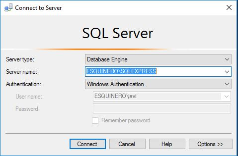

Conexión al motor de la Base de Datos
Para conectarse a la base de datos, bien sea porque es tu primera vez, o bien sea porque tienes problemas, en este capítulo, vamos a mostrar más detalladamente todas las opciones posibles.
Lo primero es buscar entre tus programas, el icono de Microsoft Sql Managment Studio.
En la versión 2016 ya no viene integrado en la instalación, es una herrammienta aparte que hay que descargarse e instalar. Aquí dispones de un vínculo al sitio de Microsoft. Descargar Microsoft Sql Managment Studio
Una vez has encontrado la herramienta. Puedes ejecutarla.

La ventana de conexión al motor dispone de varias opciones.
El primer combo, que aparecerá marcado como Database Engine o Motor de Base de datos, nos da a escoger entre el motor y la versión compact, que es la versión de motor de Microsoft integrada para que los desarrolladores compilen sitios ASP y aplicaciones de escritorio.
En nuestro caso, queremos conectarnos al motor, por tanto dejamos el combo en Database Engine
El segundo combo, donde se puede escribir un nombre, o seleccionar lo que aparece, o buscar local o ...más, nos da nuestro nombre de instancia instancia* de Sql.
- *Instancia
- Es una copia del ejecutable, que corre como un servicio del sistema. Cada instancia tiene asociadas diferentes bases de datos.
1 Por tanto es un concepto muy importante a tener en cuenta. Podemos tener instaladas en la misma maquina diferentes instancias de base de datos, y de diferentes versiones. Cada una tendrá sus bases de datos.
Si en el campo Server Name o Nombre de Servidor, desplegándolo, en la opción de ...buscar más o <browse for more...> nos mostrará la ventana:
En rojo estan márcadas las opciones de servidor local, que se refiere a las instancias1 instaladas en nuestro ordenador. Si cambiamos a la otra pestaña, podemos obtener las instancias de nuestra red local. Esta acción nos permitirá trabajar desde nuestro Manager, contra otro ordenador de nuestra red, como si estuviesemos directamente en el, siempre que dispongamos de permisos. En mi caso, desplegando en el más mis instancias locales, he encontrado dos instalaciones, una llamada "ESQUINERO", que corresponde con una edición de 2016, y la "ESQUINERO\SQLEXPRESS", que corresponde con la edición 2014.
Cuando hayamos aceptado, bien sea en nuestra Instancia local, que parece de momento lo más apropiado, bien sea en otra instancia de red, volvemos a la pantalla de autenticación.
El desplegable de nombre Autenticacion o Autentication, por defecto nos muestra Windows Autentication, y al menos Sql Server Autenticacion. En las versiones anteriores a 2016, estas eran las opciones. En 2016 la integración con el Directorio Activo es total, lo que nos da más opciones, de autenticación a través de usuarios registrados en nuestro dominio. Dado que no trataremos temas del directorio activo, no considero necesario tocar más este tema. Enlace a sitio de Microsoft con datos sobre la conexión.
Si hemos escogido Windows Authentication, pulsamos sobre conectar. Si en la instalación la hemos realizado con este usuario y no hemos marcado el modo mixto, estaremos dentro. Si hemos optado por el modo mixto, y no hemos agregado al usuario actual, nos mostrará un error. Si disponemos del usuario sa y su contraseña podemos optar por el modo Sql server.
Espero que no hayas tenido problemas con la validación. Si no lo has conseguido, recoge el número de error, y busca en la web de Microsoft.